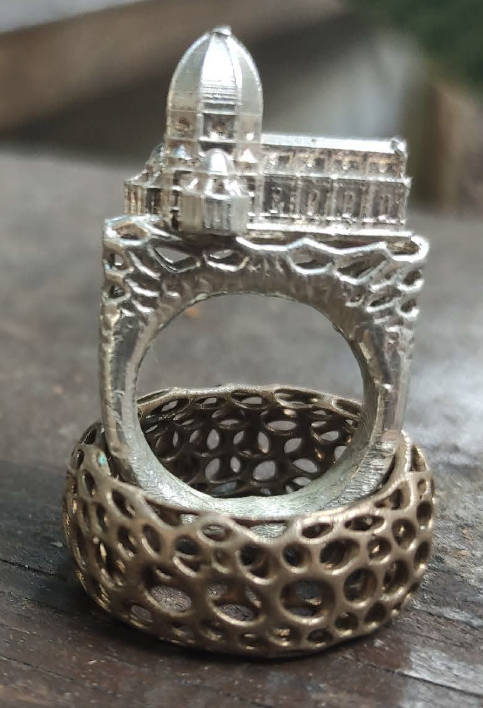

Florence-Inspired Ring Collection

This unique ring collection blends Florence's Renaissance artistry with modern 3D modeling. Each piece
channels the spirit of iconic Italian landmarks, balancing historical elegance and contemporary
craftsmanship for art lovers and bold wearers alike.
Project Overview
Drawing inspiration from Florence’s architectural wonders and rich sculptural tradition, this collection reimagines Renaissance motifs through modern technology and lost-wax casting. From cathedral domes to the fluid lines of master sculptures, every ring bridges history and innovation.
- Technologies: Rhino 3D, DLP 3D printing, Lost-wax casting
- My Role: Designer, 3D modeler, production flow manager
Creation Process
-
Digital 3D Design:
- Conceived rings echoing Florence’s Duomo, Renaissance sculptures, and Gothic motifs using Rhino 3D.
- Balanced classical elegance with modern ergonomics and wearability.
-
DLP Printing:
- Translated digital models into precise wax resin masters via high-resolution DLP 3D printing.
- Preserved fine architectural details and surface textures in the transition from digital to physical.
-
Lost-Wax Casting:
- Employed time-honored casting to transform wax models into sterling silver and bronze rings.
- Sustained tradition by collaborating with skilled artisans and using tried-and-true methods.
-
Finishing Touches:
- Refined, polished, and finished each ring by hand for luminous shine and rich texture.
- Ensured each piece met high standards for form, fit, and comfort.
Artistic Inspirations
- Domed Elegance: Architectural domes and arches inspired sweeping ring silhouettes reminiscent of Brunelleschi’s Duomo.
- Sculptural Grace: Flowing shapes pay tribute to the dynamism of Michelangelo and Donatello’s sculptures.
- Gothic Detailing: Intricate patterns echo Florentine Gothic heritage and blend historic ornament with a fresh perspective.
A Fusion of Art and Technology
- Historical Legacy: Each ring is a wearable tribute to Florence's rich artistry and its enduring cultural influence.
- Modern Innovation: Cutting-edge design and fabrication allow for forms and details previously impossible in traditional jewelry.
- Timeless Appeal: Past and future merge in pieces that transcend fleeting trends—crafted for those who cherish history and creativity alike.